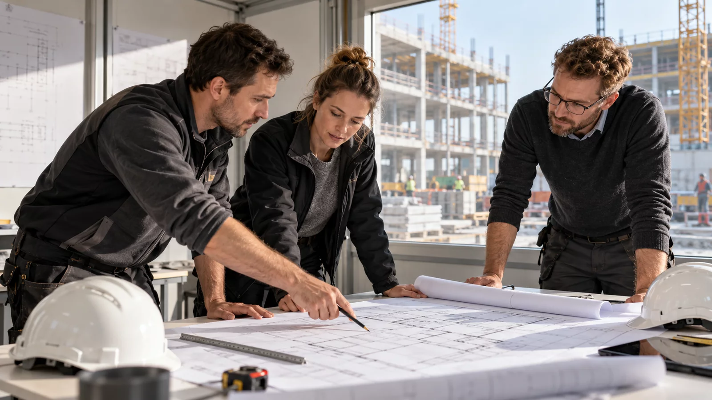

Projektkoordination
Verbindung zwischen Auftraggeber, Dokumentation und Baustellenteam.
ÜBER VASTASIA
VASTASIA Consulting Group ist seit 2016 in Rumänien und international tätig. Unsere Erfahrung umfasst Wohn-, Büro- und Industrieprojekte in Rumänien, Deutschland und Österreich.

Vorbereitung und Koordination der Arbeiten
2016Erfahrung seit
Wir verbinden Elektro-, Sanitär- und HLK-Installationen mit Teamorganisation und technischer Koordination. Für jeden Auftrag definieren wir Leistungen, Zuständigkeiten und Schnittstellen zum Gesamtprojekt.
ÜBER VASTASIA
Verbindung zwischen Auftraggeber, Dokumentation und Baustellenteam.
Ergänzende Gewerke mit festgelegten Zuständigkeiten.
Klärung und Abstimmung mit Planern, Lieferanten und Fachleuten.
UNSERE ARBEITSWEISE
Ziele, aktuellen Stand und vorhandene Unterlagen besprechen.
Vorgehen, Zuständigkeiten und Angebot je Gewerk vereinbaren.
Team und Arbeitsfolge mit dem Baustellenablauf abstimmen.
Vereinbarte Prüfungen durchführen und die Übergabe dokumentieren.
VASTASIA CONSULTING GROUP
Nennen Sie uns Standort, Gebäudetyp und aktuellen Projektstand. Gemeinsam bestimmen wir den nächsten Schritt.